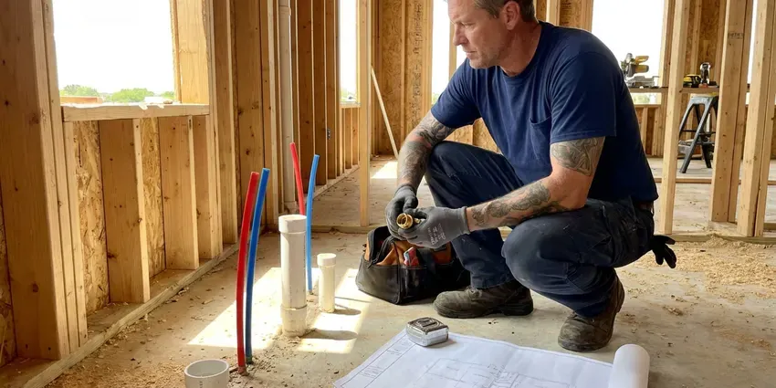

Rooter Services in Princeton, WV
When a plunger won't do it, our rooter technicians in Princeton, WV clear sinks, toilets and main sewer lines the same day.
- Fast Emergency Service
- Upfront Pricing
- Skilled Technicians
- Quick Drain Clearing

Drains Backing Up Again? Call Our Rooter Team in Princeton, WV.
A rooter technician can be at your home today with power augers sized for any drain or sewer line.
Rooter Services in Princeton, WV for Roots, Grease and Debris
GJK Plumbing provides rooter services using motorized sectional and drum augers fitted with cutting blades, spade heads and root saws. We clear everything from small bathroom lines to 4 and 6 inch sewer mains and confirm the results with a flow test.
Our expertise includes:
- Sewer camera inspections for accurate diagnosis.
- High-Pressure Hydro-Jetting Service
- Sewer Line Root Removal

Additional Plumbing Maintenance Services in Princeton, WV
Our maintenance and specialty plumbing services in Princeton, WV protect your home year-round and extend the life of every system.


Customers
Why Choose GJK Plumbing for Rooter Services in Princeton, WV?
Our experience with local Princeton conditions means that we address the root cause of your clogs, not just the symptoms, saving you time and money over time.
- Professional Tools, We use professional rooter machines and hydro-jetting equipment to clear the toughest clogs efficiently and without damage to your pipes.
- Local Expertise, GJK Plumbing technicians are familiar with Princeton's plumbing infrastructure and common issues, like tree root intrusion from mature trees.
- Pro-Grade Machines, Commercial rooter equipment clears lines that rental machines can't.
Citywide Coverage
Our service area encompasses all of Princeton, making us a reliable partner for residents and businesses facing drain and sewer issues. Shale and clay soils can hold water and move over time, which can crack sewer lines and push water into basements. We are familiar with how that affects underground lines and are equipped to handle it.
Experienced Team
Our team at GJK Plumbing is made up of experienced and continuously trained plumbing professionals, skilled in the latest rooter techniques and equipment. They have extensive knowledge of West Virginia plumbing systems and common issues, which makes clog removal efficient and effective.
Safety-First Approach
Rooter machines are powerful tools, so our crews use proper guards, gloves and foot pedal controls. We contain debris and sewage and clean the work area when we finish.
Trusted Certified Princeton Plumbing Services Professionals
At GJK Plumbing, we take pride in providing licensed, certified plumbing services throughout Princeton, WV. Backed by leading industry credentials, our experienced plumbers combine technical skill with genuine customer care. Whether it is repair, installation, or maintenance, we follow strict safety and quality standards to deliver long-lasting results you can trust.
Call Us Now PHCC Plumbing Contractor Recognition
PHCC Plumbing Contractor Recognition Better Business Bureau (BBB) Accreditation
Better Business Bureau (BBB) Accreditation Angi Certified Pro
Angi Certified Pro ISO 9001 Quality Management Certification
ISO 9001 Quality Management CertificationProfessional Rooter Services in Princeton, WV
Commercial Rooter Service in Princeton
Restaurants, apartment buildings, schools and offices put heavy loads on their drains. We root larger lines, kitchen waste lines and floor drains with commercial equipment. Scheduled maintenance plans keep lines open and reduce emergency calls. We can work after hours to avoid disrupting tenants or customers.

Commercial Rooter Services in Princeton, WV
Businesses in Princeton, WV rely on clear drains for smooth operations. GJK Plumbing provides heavy-duty commercial rooter services for restaurants, retail spaces, and offices. We handle high-volume systems and industrial-grade clogs, often caused by food waste or foreign objects, cutting downtime for your business. Regular maintenance plans are also available to prevent future disruptions.
Main Line Rooter Service Through Cleanouts in Princeton, WV
The easiest way to root a main line is through an outdoor or garage cleanout. We run cable all the way to the city connection to make sure the entire line is clear. If your home has no usable cleanout, we can install one to make future service faster. Water is run through the line afterward to confirm full flow.
Camera Inspection for Rooter Services in Princeton, WV
For difficult or recurring clogs, GJK Plumbing uses plumbing camera inspections as part of our rooter services in Princeton, WV. This allows us to visually pinpoint the exact location and nature of the blockage, whether it's roots, a collapsed pipe, or a foreign object. This accurate diagnosis means we apply the most effective clearing method, avoiding guesswork and unnecessary digging.
Residential Rooter Services in Princeton
GJK Plumbing specializes in clearing residential drain blockages, from kitchen sinks clogged with grease to bathroom drains full of hair and soap scum. We use various methods, including augers and hydro-jetting, to restore flow without damaging your home's pipes. Our technicians are trained to find the cause of recurring clogs and offer practical advice for your Princeton home.
Emergency Rooter Services in Princeton, WV
Plumbing emergencies, like a sewage backup, can happen at any time. GJK Plumbing offers 24/7 emergency rooter services in Princeton, WV to address urgent drain and sewer line blockages. Our emergency team is equipped to quickly diagnose and clear severe clogs, minimizing damage and restoring comfort to your home or business, even in the middle of the night or on weekends.
Rooting vs. Pipe Repair in Princeton, WV
Rooting is the right fix when the pipe is sound but clogged. If roots keep returning quickly, or the cable meets broken pipe, a repair may save money over time. Rooting usually costs a few hundred dollars, while lining or replacement costs more but ends repeat clogs. A camera inspection shows which option makes sense.

Floor Drain Rooter in Princeton
Basement and utility room floor drains in Princeton are prone to clogs from dirt, debris, and sediment. GJK Plumbing provides floor drain rooter services to keep these important drains open and working, preventing basement flooding. We use the appropriate equipment to clear blockages, often caused by laundry lint or sump pump discharge, so water flows properly to your main sewer line.
Rooter Services Near Me in Princeton, WV
When you search for "rooter services near me" in Princeton, WV, GJK Plumbing is your go-to local expert. We know the plumbing infrastructure throughout the area, including how local soil and common tree species can affect sewer lines. Our nearby location means faster response times and technicians who understand your specific needs.
When you search for 'rooter services near me' in Princeton, WV, GJK Plumbing is your go-to local expert. We are deeply familiar with the plumbing infrastructure across the area, from residential streets to commercial districts, allowing us to respond quickly and effectively.
GJK Plumbing at a Glance
- Licensed and insured plumbers serving Princeton, WV
- 24/7 emergency service with same-day scheduling
- Upfront, flat-rate pricing before work begins
- 4.8-star rated by 832+ West Virginia customers
Princeton Map
Princeton Information
- Population
- 5,642
- Area codes
- Local
- Service area
- Princeton and communities within 40 miles
- Nearby
- Bluefield, Beckley, Oak Hill, Charleston
Effective rooter services matter in Princeton, WV because shifting soil and aging pipe can open cracks that let tree roots infiltrate and cause stubborn blockages.
Expert Services
Trust our professionals for reliable GJK Plumbing solutions in Princeton, WV.
Our Specialized Plumbing Services in Princeton, WV
At GJK Plumbing, we provide a complete range of plumbing services across Princeton, WV. From leak detection to full system installations, our team ensures fast, precise, and affordable service for both residential and commercial properties. Explore our core services below:


How Our Rooter Services Process Works in Princeton, WV
Our rooter services process is designed for efficiency and clarity, so your plumbing issues are resolved quickly and effectively.
Request a Quote
Contact GJK Plumbing by calling (681) 223-3607 to schedule your rooter service. Our friendly staff will gather details about your plumbing issue and arrange for a technician to visit your Princeton property.
Diagnosis & Assessment
Our skilled technician will arrive on-site to assess the blockage using the right tools, which may include a plumbing camera for accurate diagnosis. We'll identify the cause and location of the clog.
Professional Clog Removal
Using professional rooter equipment, such as powerful augers or hydro-jetting machines, we will safely and effectively clear the blockage. Our goal is to restore full flow to your drains.
Frequently Asked Questions About Rooter Services in Princeton
The cost of rooter service in Princeton, WV usually ranges from $200 to $600, depending on the severity and location of the clog. More complex issues like main sewer line blockages or those requiring hydro-jetting can be higher, generally between $400 and $1,000. We provide transparent, upfront pricing after a thorough diagnosis.
Generally, simple rooter services to clear clogs do not require a permit in Princeton. However, if the service reveals a need for pipe repair or replacement, especially for main sewer lines, a plumbing permit may be required. We will handle all necessary permitting if that situation arises.
Yes. Most rooter jobs include a limited guarantee for a set number of days. If the line clogs again within that time, we return at no additional charge.
Most standard rooter services for isolated clogs can be completed within 1 to 3 hours. More complex main sewer line blockages, especially those involving extensive root removal or hydro-jetting, might take longer, sometimes up to a full day. We aim for prompt service with lasting results.
For most standard drain cleaning or rooter services within your property's existing plumbing system, permits are generally not required in Princeton, WV. However, if the rooter service reveals a need for significant repair, replacement, or excavation of the main sewer line, permits may be necessary. We will let you know if any permits are needed for your situation.
To prevent future clogs, avoid pouring grease down drains, use drain screens in sinks and showers to catch hair and food particles, and throw away fibrous materials like coffee grounds and wipes in the trash. Consider periodic professional drain maintenance or hydro-jetting, especially for older homes or those with a history of recurring blockages.
When performed by trained professionals like those at GJK Plumbing, rooter services are safe for your pipes. Our technicians are skilled in operating the equipment correctly to clear blockages without causing damage. However, if pipes are already compromised, such as corroded or cracked, some methods may worsen existing issues, which is why a camera inspection is often recommended first.
Homes with tree roots or older clay pipe often need rooting every 12 to 24 months. Homes with newer PVC lines may go years without it. A camera inspection can help set the best schedule.
What People Are Saying About Our Plumbing Experts?

Emily R.
I called GJK Plumbing for plumbing repair, and the technician was fast, polite, and thorough. They explained the problem clearly and fixed it the same day. I will definitely hire them again. Highly recommended!
Plumbing Repair · Dunbar, WV
Robert G.
The trenchless sewer replacement saved our front yard. They walked us through the camera inspection footage first so we knew exactly what we were paying for.
Sewer Line Replacement · Dunbar, WV
Patricia H.
We had a slab leak that two other companies could not find. GJK Plumbing located it in under an hour, explained our options, and the price matched the quote to the dollar.
Slab Leak Repair · Dunbar, WV
Mark T.
When our office needed drain cleaning, GJK Plumbing provided quick, reliable service. The plumber arrived on time and made sure every drain flowed perfectly before leaving. Very satisfied.
Drain Cleaning · Charleston, WV
Laura S.
I scheduled a water heater replacement, and the team made the process smooth and affordable. The new unit works perfectly, and they cleaned up after completing the job.
Water Heater Replacement · Charleston, WVJames P.
Our commercial plumbing system had a leak under the sink, and GJK Plumbing handled it professionally. The plumbers arrived quickly and restored everything without disruption to our customers.
Commercial Plumbing · Beckley, WV